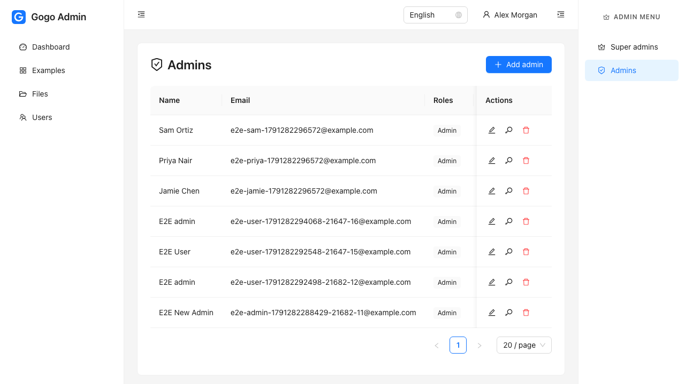
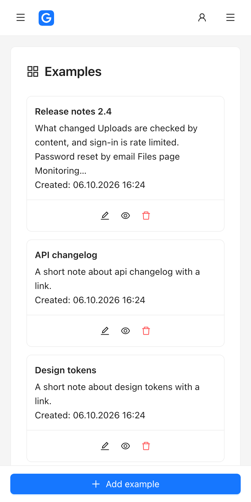

Full-stack starter kit
A Go API, a React admin panel, and a server to run them on.
Gogokit gives a new project the parts every project needs: sign-in with roles, user management, uploads, monitoring, backups and deployment. It is a skeleton you copy and own, not a framework you depend on.
- Go
- Gin
- PostgreSQL
- sqlc
- Redis
- React
- TypeScript
- Ant Design
- Playwright
- Ansible

One repository
Four folders. Clone once, and everything is there.
No ORM, no hidden layers and no code you cannot read. Services call type-safe SQL directly, and the admin panel's types are generated from the API.
The API. Gin, PostgreSQL through sqlc, Redis, JWT sessions with roles and per-record policies.
Go
The admin panel. React, strict TypeScript, Ant Design and TanStack Query, in English and Ukrainian.
React
Nightly backups of the database and uploaded files, to disk or Google Cloud Storage, with retention.
Shell
From an empty Ubuntu server to a running site with TLS, and a second command to release new code.
Ansible
Accounts, done properly
Sign-in with rotating refresh tokens, password reset and email confirmation by emailed link, and a lockout that escalates on repeated failures.
Roles and policies
Super admins, admins and users. Who may do what to a record lives in one small file per module, mirrored in the UI.
User management
Screens for super admins and admins to create, edit and remove accounts, plus a profile page for everyone.
Files and rich text
Uploads checked by their content, not their name, and a markdown editor with a viewer that never runs embedded HTML.
One contract
The API generates its OpenAPI file; the admin panel generates its TypeScript types from it. Validation errors land under the right form field.
Tests that mean something
Go tests run against a real PostgreSQL and roll back after each one. Playwright drives the admin panel against the real API.
A look around
Working screens, not placeholders.
A reference module to copy
The examples module is the pattern for everything you add: a list paged on the server, a full-page editor with an unsaved-changes guard, and a markdown field.


Monitoring comes built in
A dashboard served by the API itself, behind its own password. No agent and no separate service to run.
- Requests, response times and errors per route
- SQL statistics grouped by query name
- Recent logs, linked to the request that wrote them
- CPU, memory, disk and goroutines


Works on a phone
Tables turn into cards, menus into drawers, and the page's main action moves to a bar at the bottom of the screen. None of it is per-page work: it comes from the shared components.


Agentic development
Written so a coding agent can extend it.
The ease of a good framework comes from knowing where everything goes. Gogokit writes that down, for people and for agents alike.
A guide in every folder
Each part has an AGENTS.md with its conventions: how a handler is shaped, where a rule belongs, what to run before calling the work done.
Recipes instead of generators
Step-by-step procedures for the changes a project sees most: add a module, add an endpoint, change the schema, add a screen, add a test. Each ends with how to check the result. They are also Claude Code skills.
One reference to copy
A complete example module on both sides, so "do it like that one" is always a valid instruction.
# in a session with your agent > /full-stack-feature orders # what the recipe walks through backend/ migration, queries, policy, service, handlers, factory, tests make swagger && make test frontend/ make api-types types, api, hooks, policy, pages, route, menu, locales make test
Get started
Running locally in a few minutes.
You need Go, Node.js, Docker for PostgreSQL and Redis, and Make.
git clone https://github.com/nicklasos/gogokit.git && cd gogokit # API cd backend && cp .env.example .env make up # PostgreSQL, Redis and a mail catcher in Docker make migrate-up make seed # admin@example.com / password123, plus sample data make dev # http://localhost:8181 # Admin panel, in a second terminal cd frontend && cp .env.example .env npm install && npm run dev # http://localhost:5173
Then put it on a server
Point a domain at a fresh Ubuntu server, fill in a settings file, and run one playbook. It installs PostgreSQL, Redis, Go, Node.js, nginx and supervisor, builds both halves, gets a certificate and schedules the backups.
Releasing new code afterwards is ansible-playbook deploy.yml: pull, build, migrate, restart, and wait for the health check.
cd deploy ansible-galaxy collection install -r requirements.yml cp inventory/hosts.example.yml inventory/hosts.yml cp secrets.example.yml group_vars/all/secrets.yml ansible-playbook provision.yml
Where it stands. The API skeleton is the base of three projects running in production. The admin panel rewrite, the monitoring wiring and the Ansible playbooks are newer: the playbooks pass their checks but have not yet been run against a real server, so do your first run on one you can throw away.